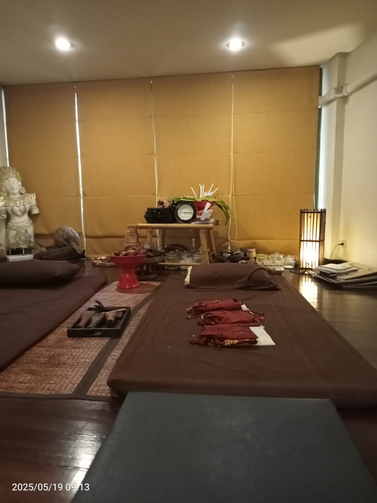

Il massaggio Lanna Tok Sen è una pratica tradizionale thailandese che utilizza un martelletto e un cuneo di legno per creare percussioni ritmiche e controllate. Il trattamento viene adattato alla persona e alla sensibilità delle aree coinvolte.
Origini e significato del massaggio Lanna Tok Sen
Il Tok Sen è legato alla tradizione Lanna, sviluppatasi nel Nord della Thailandia, nell'area di Chiang Mai. Nella tradizione locale, "Tok" richiama il battere o picchiettare, mentre "Sen" indica i canali energetici descritti dalla medicina tradizionale thailandese.
A differenza del massaggio thailandese tradizionale, che utilizza soprattutto pressioni e allungamenti manuali, il Tok Sen si distingue per l'uso di utensili in legno e per il ritmo delle percussioni.

Come funziona la tecnica Tok Sen
Gli strumenti sono generalmente un martelletto leggero, chiamato limb, e un cuneo o scalpello dalla punta smussata, chiamato khone o khon. Possono essere realizzati in legno duro; alcune tradizioni citano tamarindo o teak.

L'operatrice appoggia il cuneo sulle zone concordate e lo percuote con il martelletto, mantenendo un ritmo regolare. Le vibrazioni e il suono accompagnano il trattamento: intensità e modalità vengono adattate alle preferenze della persona, senza insistere sulle aree sensibili.
Benefici percepiti e benessere
I benefici Tok Sen sono descritti soprattutto nell'ambito del benessere e della tradizione olistica. Le sensazioni variano da persona a persona; il trattamento non diagnostica né cura patologie.
- Rilassamento muscolare: il ritmo e le vibrazioni possono accompagnare una sensazione di distensione.
- Canali Sen e blocchi energetici: nella visione tradizionale, il trattamento mira a favorire una percezione di armonia e libero flusso dell'energia.
- Ritmo e ascolto del corpo: il suono regolare può aiutare alcune persone a concentrarsi sulle sensazioni e a rallentare.
- Esperienza personalizzata: pressione, ritmo e zone trattate si concordano durante la seduta.
La seduta e l'ambiente
La seduta si svolge in uno spazio tranquillo, con la persona distesa e coperta nelle aree non trattate. Prima di iniziare, è possibile parlare di preferenze, sensibilità e zone da evitare.

Prima della seduta
Comunica all'operatrice eventuali condizioni di salute o sensibilità. Il Tok Sen è un trattamento di benessere e non sostituisce il parere di un professionista sanitario. Contattaci per verificare sede e disponibilità.